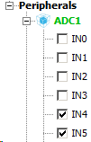
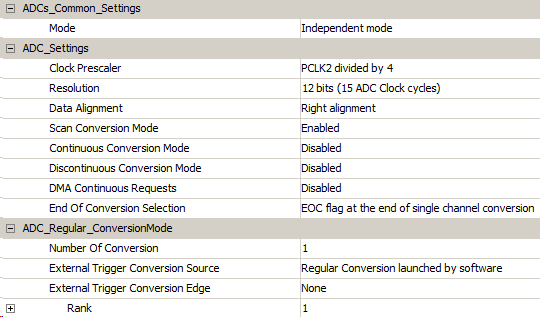
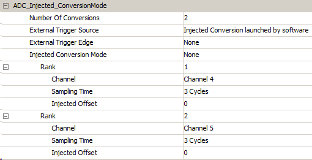

Включаем ADC1 и соответствующие каналы:

Заходим в конфигурацию ADC и выставляем Scan Conversion Mode, остальные параметры отключаем:

В разделе ADC_Injected_ConversionMode выставляем количество используемых конвертаций (в нашем случае - 2) и распределяем их по каналам:

Собиарем проект.
/**
******************************************************************************
* File Name : main.c
* Description : Main program body
******************************************************************************
** This notice applies to any and all portions of this file
* that are not between comment pairs USER CODE BEGIN and
* USER CODE END. Other portions of this file, whether
* inserted by the user or by software development tools
* are owned by their respective copyright owners.
*
* COPYRIGHT(c) 2018 STMicroelectronics
*
* Redistribution and use in source and binary forms, with or without modification,
* are permitted provided that the following conditions are met:
* 1. Redistributions of source code must retain the above copyright notice,
* this list of conditions and the following disclaimer.
* 2. Redistributions in binary form must reproduce the above copyright notice,
* this list of conditions and the following disclaimer in the documentation
* and/or other materials provided with the distribution.
* 3. Neither the name of STMicroelectronics nor the names of its contributors
* may be used to endorse or promote products derived from this software
* without specific prior written permission.
*
* THIS SOFTWARE IS PROVIDED BY THE COPYRIGHT HOLDERS AND CONTRIBUTORS "AS IS"
* AND ANY EXPRESS OR IMPLIED WARRANTIES, INCLUDING, BUT NOT LIMITED TO, THE
* IMPLIED WARRANTIES OF MERCHANTABILITY AND FITNESS FOR A PARTICULAR PURPOSE ARE
* DISCLAIMED. IN NO EVENT SHALL THE COPYRIGHT HOLDER OR CONTRIBUTORS BE LIABLE
* FOR ANY DIRECT, INDIRECT, INCIDENTAL, SPECIAL, EXEMPLARY, OR CONSEQUENTIAL
* DAMAGES (INCLUDING, BUT NOT LIMITED TO, PROCUREMENT OF SUBSTITUTE GOODS OR
* SERVICES; LOSS OF USE, DATA, OR PROFITS; OR BUSINESS INTERRUPTION) HOWEVER
* CAUSED AND ON ANY THEORY OF LIABILITY, WHETHER IN CONTRACT, STRICT LIABILITY,
* OR TORT (INCLUDING NEGLIGENCE OR OTHERWISE) ARISING IN ANY WAY OUT OF THE USE
* OF THIS SOFTWARE, EVEN IF ADVISED OF THE POSSIBILITY OF SUCH DAMAGE.
*
******************************************************************************
*/
/* Includes ------------------------------------------------------------------*/
#include "main.h"
#include "stm32f4xx_hal.h"
/* USER CODE BEGIN Includes */
#include "lcd44780.h"
/* USER CODE END Includes */
/* Private variables ---------------------------------------------------------*/
ADC_HandleTypeDef hadc1;
/* USER CODE BEGIN PV */
/* Private variables ---------------------------------------------------------*/
//volatile uint16_t adc_result[2];
/* USER CODE END PV */
/* Private function prototypes -----------------------------------------------*/
void SystemClock_Config(void);
static void MX_GPIO_Init(void);
static void MX_ADC1_Init(void);
/* USER CODE BEGIN PFP */
/* Private function prototypes -----------------------------------------------*/
uint8_t getDigit(uint16_t, uint16_t);
/* USER CODE END PFP */
/* USER CODE BEGIN 0 */
/* USER CODE END 0 */
int main(void)
{
/* USER CODE BEGIN 1 */
float adcResult[2];
/* USER CODE END 1 */
/* MCU Configuration----------------------------------------------------------*/
/* Reset of all peripherals, Initializes the Flash interface and the Systick. */
HAL_Init();
/* USER CODE BEGIN Init */
/* USER CODE END Init */
/* Configure the system clock */
SystemClock_Config();
/* USER CODE BEGIN SysInit */
/* USER CODE END SysInit */
/* Initialize all configured peripherals */
MX_GPIO_Init();
MX_ADC1_Init();
/* USER CODE BEGIN 2 */
lcdInit();
/* USER CODE END 2 */
/* Infinite loop */
/* USER CODE BEGIN WHILE */
while (1)
{
/* USER CODE END WHILE */
/* USER CODE BEGIN 3 */
HAL_ADCEx_InjectedStart(&hadc1);
HAL_ADC_PollForConversion(&hadc1, 100);
adcResult[0] = ((float)HAL_ADCEx_InjectedGetValue(&hadc1, ADC_INJECTED_RANK_1)) * 3 / 4096;
adcResult[1] = ((float)HAL_ADCEx_InjectedGetValue(&hadc1, ADC_INJECTED_RANK_2)) * 3 / 4096;
HAL_ADCEx_InjectedStop(&hadc1);
lcdSendCmnd(0x01);
lcdSendCmnd(0x02);
for(uint8_t i = 0; i < 2; ++i)
{
uint16_t value = adcResult[i];
uint16_t reminder = adcResult[i] * 1000;
lcdSendData(getDigit(value, 1));
lcdSendCode(0x2E);
lcdSendData(getDigit(reminder, 100));
lcdSendData(getDigit(reminder, 10));
lcdSendCmnd(0xA8);
}
/*
uint16_t value = adcResult[0];
uint16_t reminder = adcResult[0] * 1000;
lcdSendData(getDigit(value, 1));
lcdSendCode(0x2E);
lcdSendData(getDigit(reminder, 100));
lcdSendData(getDigit(reminder, 10));
lcdSendCmnd(0xA8);
value = adcResult[1];
reminder = adcResult[1] * 1000;
lcdSendData(getDigit(value, 1));
lcdSendCode(0x2E);
lcdSendData(getDigit(reminder, 100));
lcdSendData(getDigit(reminder, 10));
*/
HAL_Delay(1000);
}
/* USER CODE END 3 */
}
/** System Clock Configuration
*/
void SystemClock_Config(void)
{
RCC_OscInitTypeDef RCC_OscInitStruct;
RCC_ClkInitTypeDef RCC_ClkInitStruct;
/**Configure the main internal regulator output voltage
*/
__HAL_RCC_PWR_CLK_ENABLE();
__HAL_PWR_VOLTAGESCALING_CONFIG(PWR_REGULATOR_VOLTAGE_SCALE1);
/**Initializes the CPU, AHB and APB busses clocks
*/
RCC_OscInitStruct.OscillatorType = RCC_OSCILLATORTYPE_HSE;
RCC_OscInitStruct.HSEState = RCC_HSE_ON;
RCC_OscInitStruct.PLL.PLLState = RCC_PLL_ON;
RCC_OscInitStruct.PLL.PLLSource = RCC_PLLSOURCE_HSE;
RCC_OscInitStruct.PLL.PLLM = 4;
RCC_OscInitStruct.PLL.PLLN = 168;
RCC_OscInitStruct.PLL.PLLP = RCC_PLLP_DIV2;
RCC_OscInitStruct.PLL.PLLQ = 4;
if (HAL_RCC_OscConfig(&RCC_OscInitStruct) != HAL_OK)
{
_Error_Handler(__FILE__, __LINE__);
}
/**Initializes the CPU, AHB and APB busses clocks
*/
RCC_ClkInitStruct.ClockType = RCC_CLOCKTYPE_HCLK|RCC_CLOCKTYPE_SYSCLK
|RCC_CLOCKTYPE_PCLK1|RCC_CLOCKTYPE_PCLK2;
RCC_ClkInitStruct.SYSCLKSource = RCC_SYSCLKSOURCE_PLLCLK;
RCC_ClkInitStruct.AHBCLKDivider = RCC_SYSCLK_DIV1;
RCC_ClkInitStruct.APB1CLKDivider = RCC_HCLK_DIV16;
RCC_ClkInitStruct.APB2CLKDivider = RCC_HCLK_DIV2;
if (HAL_RCC_ClockConfig(&RCC_ClkInitStruct, FLASH_LATENCY_5) != HAL_OK)
{
_Error_Handler(__FILE__, __LINE__);
}
/**Configure the Systick interrupt time
*/
HAL_SYSTICK_Config(HAL_RCC_GetHCLKFreq()/1000);
/**Configure the Systick
*/
HAL_SYSTICK_CLKSourceConfig(SYSTICK_CLKSOURCE_HCLK);
/* SysTick_IRQn interrupt configuration */
HAL_NVIC_SetPriority(SysTick_IRQn, 0, 0);
}
/* ADC1 init function */
static void MX_ADC1_Init(void)
{
ADC_ChannelConfTypeDef sConfig;
ADC_InjectionConfTypeDef sConfigInjected;
/**Configure the global features of the ADC (Clock, Resolution, Data Alignment and number of conversion)
*/
hadc1.Instance = ADC1;
hadc1.Init.ClockPrescaler = ADC_CLOCK_SYNC_PCLK_DIV4;
hadc1.Init.Resolution = ADC_RESOLUTION_12B;
hadc1.Init.ScanConvMode = ENABLE;
hadc1.Init.ContinuousConvMode = DISABLE;
hadc1.Init.DiscontinuousConvMode = DISABLE;
hadc1.Init.ExternalTrigConvEdge = ADC_EXTERNALTRIGCONVEDGE_NONE;
hadc1.Init.ExternalTrigConv = ADC_SOFTWARE_START;
hadc1.Init.DataAlign = ADC_DATAALIGN_RIGHT;
hadc1.Init.NbrOfConversion = 1;
hadc1.Init.DMAContinuousRequests = DISABLE;
hadc1.Init.EOCSelection = ADC_EOC_SINGLE_CONV;
if (HAL_ADC_Init(&hadc1) != HAL_OK)
{
_Error_Handler(__FILE__, __LINE__);
}
/**Configure for the selected ADC regular channel its corresponding rank in the sequencer and its sample time.
*/
sConfig.Channel = ADC_CHANNEL_4;
sConfig.Rank = 1;
sConfig.SamplingTime = ADC_SAMPLETIME_3CYCLES;
if (HAL_ADC_ConfigChannel(&hadc1, &sConfig) != HAL_OK)
{
_Error_Handler(__FILE__, __LINE__);
}
/**Configures for the selected ADC injected channel its corresponding rank in the sequencer and its sample time
*/
sConfigInjected.InjectedChannel = ADC_CHANNEL_4;
sConfigInjected.InjectedRank = 1;
sConfigInjected.InjectedNbrOfConversion = 2;
sConfigInjected.InjectedSamplingTime = ADC_SAMPLETIME_3CYCLES;
sConfigInjected.ExternalTrigInjecConvEdge = ADC_EXTERNALTRIGINJECCONVEDGE_NONE;
sConfigInjected.ExternalTrigInjecConv = ADC_INJECTED_SOFTWARE_START;
sConfigInjected.AutoInjectedConv = DISABLE;
sConfigInjected.InjectedDiscontinuousConvMode = DISABLE;
sConfigInjected.InjectedOffset = 0;
if (HAL_ADCEx_InjectedConfigChannel(&hadc1, &sConfigInjected) != HAL_OK)
{
_Error_Handler(__FILE__, __LINE__);
}
/**Configures for the selected ADC injected channel its corresponding rank in the sequencer and its sample time
*/
sConfigInjected.InjectedChannel = ADC_CHANNEL_5;
sConfigInjected.InjectedRank = 2;
if (HAL_ADCEx_InjectedConfigChannel(&hadc1, &sConfigInjected) != HAL_OK)
{
_Error_Handler(__FILE__, __LINE__);
}
}
/** Configure pins as
* Analog
* Input
* Output
* EVENT_OUT
* EXTI
*/
static void MX_GPIO_Init(void)
{
GPIO_InitTypeDef GPIO_InitStruct;
/* GPIO Ports Clock Enable */
__HAL_RCC_GPIOH_CLK_ENABLE();
__HAL_RCC_GPIOA_CLK_ENABLE();
__HAL_RCC_GPIOD_CLK_ENABLE();
__HAL_RCC_GPIOB_CLK_ENABLE();
/*Configure GPIO pin Output Level */
HAL_GPIO_WritePin(GPIOD, GPIO_PIN_3|GPIO_PIN_4|GPIO_PIN_6|GPIO_PIN_7, GPIO_PIN_RESET);
/*Configure GPIO pin Output Level */
HAL_GPIO_WritePin(GPIOB, GPIO_PIN_8|GPIO_PIN_9, GPIO_PIN_RESET);
/*Configure GPIO pins : PD3 PD4 PD6 PD7 */
GPIO_InitStruct.Pin = GPIO_PIN_3|GPIO_PIN_4|GPIO_PIN_6|GPIO_PIN_7;
GPIO_InitStruct.Mode = GPIO_MODE_OUTPUT_PP;
GPIO_InitStruct.Pull = GPIO_NOPULL;
GPIO_InitStruct.Speed = GPIO_SPEED_FREQ_LOW;
HAL_GPIO_Init(GPIOD, &GPIO_InitStruct);
/*Configure GPIO pins : PB8 PB9 */
GPIO_InitStruct.Pin = GPIO_PIN_8|GPIO_PIN_9;
GPIO_InitStruct.Mode = GPIO_MODE_OUTPUT_PP;
GPIO_InitStruct.Pull = GPIO_NOPULL;
GPIO_InitStruct.Speed = GPIO_SPEED_FREQ_LOW;
HAL_GPIO_Init(GPIOB, &GPIO_InitStruct);
}
/* USER CODE BEGIN 4 */
uint8_t getDigit(uint16_t number, uint16_t exp)
{
if(exp == 100)
number %= 1000;
else if(exp == 10)
number %= 100;
else if(exp == 1)
return number %= 10;
return number / exp;
}
/* USER CODE END 4 */
/**
* @brief This function is executed in case of error occurrence.
* @param None
* @retval None
*/
void _Error_Handler(char * file, int line)
{
/* USER CODE BEGIN Error_Handler_Debug */
/* User can add his own implementation to report the HAL error return state */
while(1)
{
}
/* USER CODE END Error_Handler_Debug */
}
#ifdef USE_FULL_ASSERT
/**
* @brief Reports the name of the source file and the source line number
* where the assert_param error has occurred.
* @param file: pointer to the source file name
* @param line: assert_param error line source number
* @retval None
*/
void assert_failed(uint8_t* file, uint32_t line)
{
/* USER CODE BEGIN 6 */
/* User can add his own implementation to report the file name and line number,
ex: printf("Wrong parameters value: file %s on line %d\r\n", file, line) */
/* USER CODE END 6 */
}
#endif
/**
* @}
*/
/**
* @}
*/
/************************ (C) COPYRIGHT STMicroelectronics *****END OF FILE****/